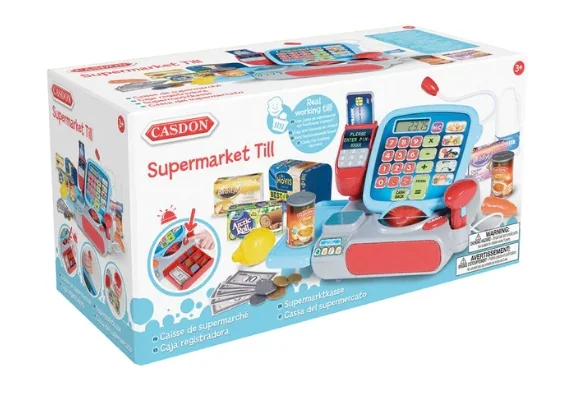
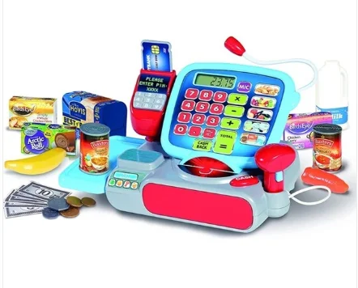

Casdon Supermarket Till – Cash Register Toy Ireland
Buy the Casdon Supermarket Till from ToyTown.ie Toymaster, Longford. Includes accessories for checkout play.

Alt Text: Casdon Supermarket Till box with scanner and food – Ireland

Alt Text: Casdon Supermarket Till layout showing calculator and card reader – Ireland
Casdon Supermarket Till Ireland
This Supermarket Till has a scanner, calculator, working mic and more. Encourages realistic shopping checkout play and includes play food items.